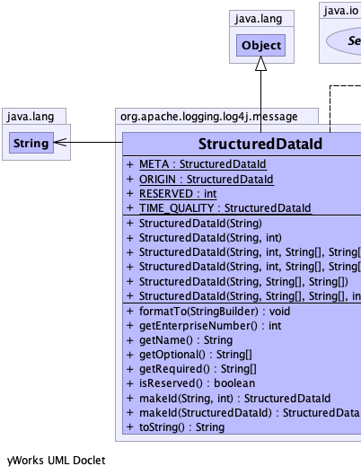
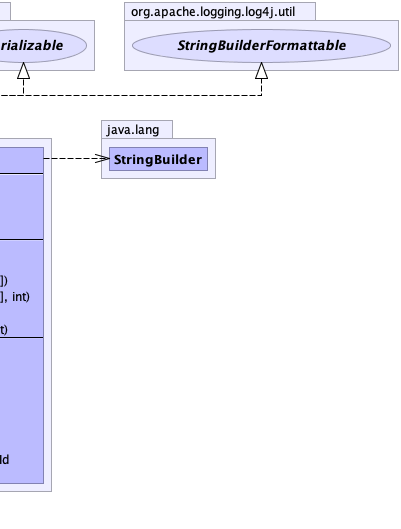

public class StructuredDataId extends java.lang.Object implements java.io.Serializable, StringBuilderFormattable
|  |  |
| Modifier and Type | Field and Description |
|---|---|
static StructuredDataId |
META
RFC 5424 Meta.
|
static StructuredDataId |
ORIGIN
RFC 5424 Origin.
|
static int |
RESERVED
Reserved enterprise number.
|
static StructuredDataId |
TIME_QUALITY
RFC 5424 Time Quality.
|
| Constructor and Description |
|---|
StructuredDataId(java.lang.String name)
Creates a StructuredDataId based on the name.
|
StructuredDataId(java.lang.String name,
int maxLength)
Creates a StructuredDataId based on the name.
|
StructuredDataId(java.lang.String name,
int enterpriseNumber,
java.lang.String[] required,
java.lang.String[] optional)
A Constructor that helps conformance to RFC 5424.
|
StructuredDataId(java.lang.String name,
int enterpriseNumber,
java.lang.String[] required,
java.lang.String[] optional,
int maxLength)
A Constructor that helps conformance to RFC 5424.
|
StructuredDataId(java.lang.String name,
java.lang.String[] required,
java.lang.String[] optional) |
StructuredDataId(java.lang.String name,
java.lang.String[] required,
java.lang.String[] optional,
int maxLength)
A Constructor that helps conformance to RFC 5424.
|
| Modifier and Type | Method and Description |
|---|---|
void |
formatTo(java.lang.StringBuilder buffer)
Writes a text representation of this object into the specified
StringBuilder, ideally without allocating
temporary objects. |
int |
getEnterpriseNumber()
Returns the enterprise number.
|
java.lang.String |
getName()
Returns the StructuredDataId name.
|
java.lang.String[] |
getOptional()
Returns a list of optional keys.
|
java.lang.String[] |
getRequired()
Returns a list of required keys.
|
boolean |
isReserved()
Indicates if the id is reserved.
|
StructuredDataId |
makeId(java.lang.String defaultId,
int anEnterpriseNumber)
Creates an id based on the current id.
|
StructuredDataId |
makeId(StructuredDataId id)
Creates an id using another id to supply default values.
|
java.lang.String |
toString() |
public static final StructuredDataId TIME_QUALITY
public static final StructuredDataId ORIGIN
public static final StructuredDataId META
public static final int RESERVED
public StructuredDataId(java.lang.String name)
name - The Structured Data Element name (maximum length is 32)public StructuredDataId(java.lang.String name,
int maxLength)
name - The Structured Data Element name.maxLength - The maximum length of the name.public StructuredDataId(java.lang.String name,
java.lang.String[] required,
java.lang.String[] optional)
name - required - optional - public StructuredDataId(java.lang.String name,
java.lang.String[] required,
java.lang.String[] optional,
int maxLength)
name - The name portion of the id.required - The list of keys that are required for this id.optional - The list of keys that are optional for this id.public StructuredDataId(java.lang.String name,
int enterpriseNumber,
java.lang.String[] required,
java.lang.String[] optional)
name - The name portion of the id.enterpriseNumber - The enterprise number.required - The list of keys that are required for this id.optional - The list of keys that are optional for this id.public StructuredDataId(java.lang.String name,
int enterpriseNumber,
java.lang.String[] required,
java.lang.String[] optional,
int maxLength)
name - The name portion of the id.enterpriseNumber - The enterprise number.required - The list of keys that are required for this id.optional - The list of keys that are optional for this id.maxLength - The maximum length of the StructuredData Id key.public StructuredDataId makeId(StructuredDataId id)
id - The original StructuredDataId.public StructuredDataId makeId(java.lang.String defaultId, int anEnterpriseNumber)
defaultId - The default id to use if this StructuredDataId doesn't have a name.anEnterpriseNumber - The enterprise number.public java.lang.String[] getRequired()
public java.lang.String[] getOptional()
public java.lang.String getName()
public int getEnterpriseNumber()
public boolean isReserved()
public java.lang.String toString()
toString in class java.lang.Objectpublic void formatTo(java.lang.StringBuilder buffer)
StringBuilderFormattableStringBuilder, ideally without allocating
temporary objects.formatTo in interface StringBuilderFormattablebuffer - the StringBuilder to write into